ShareTheCaregiving™, Inc. (STCG) is a not-for-profit organization and is registered with New York State, Department of Law, Charities Bureau.
On July 1, 2008 ShareTheCaregiving™, Inc. put its 501c3 into hibernation in order to go under the fiscal umbrella (501c3) of the National Center for Civic Innovation (aka The Fund for the City of New York). NCCI provides us with needed fiscal and administrative management services so we can better focus on our mission.
ShareTheCaregiving™, Inc.(STCG) is also widely referred to as Share The Care™(STC)
OUR MISSION
To improve the “quality of life” of anyone
who needs support–and to reduce the stress,
depression, isolation and economic hardship of their caregivers.
OUR FOCUS IS EDUCATION
Caregiving will touch everyone at some point in life yet it often remains in the shadows of the public/media spotlight because it does not make for a picture that melts the heart but rather one to be avoided at all costs. Not so much because people are uncaring but rather frightened and uneducated.
Sometimes, friends disappear when illness strikes because they don’t know “what to do or what to say.”
And often the person needing support and their caregiver hide the fact and carry the entire burden alone rather than admit they could use help.
STC’s focus is on educating caregivers, patients and their concerned friends, neighbors, co-workers and acquaintances about the profound personal benefits to everyone involved through sharing the care.
Because we find that family caregivers often tend to be isolated and therefore less likely to reach out for help, we target professionals, and faith communities. They see caregivers and patients on a daily basis and are best situated to identify those who could benefit from a STC group. We also seek to reach working caregivers through corporations.
The People Behind STC
Sheila Warnock
Founder, President, CEO
ShareTheCaregiving™, Inc.
Co-author Share The Care™
Speaker, Trainer, Workshop Leader
Sheila has combined her life experiences as a three-time caregiver, co-author speaker and trainer with her creative and advertising background skills to create the materials and programs the organization uses to communicate its message and carry out its mission.
Her unique perspective on caregiving comes from having been a solitary long distance caregiver for her widowed mother and then part of the group, for her friend, Susan Farrow, that pioneered the STC model, and again years later in a group for Co-author Cappy Capossela.
These group experiences as well as those of groups around the country, who have successfully used the STC model, have reinforced Sheila’s determination to make the public aware of the incredible benefits derived from this collaborative approach to caregiving.
It is her dream that people everywhere involved in making caregiving decisions will view the STC model as a viable and rewarding option.
Read more
Today, together with the dedication, skills, and expertise of everyone involved (Volunteers, Board of Directors, Steering Committee, Volunteer Outreach Directors, and Advisory Committee) the visibility of STC is growing much wider.
Professional interest is building globally as more groups, organizations and programs start adopting the model to help meet the surge in caregiving needs as the world population ages.
Sheila is a member of the New York City Family Caregiver Coalition, the American Society on Aging, and the National Speakers Association. She served on the HealthCare Chaplaincy’s Residence Advisory Committee for a Palliative Care Campus. In 2012, EmblemHealth invited STC to be a founding member of the New York City Partnership For Family Caregiving Corps with a focus on reaching out to help corporations and their caregiving employees.
Sheila is the recipient of a number of awards and prizes including:
2011 – Sheila was named (out of over 2,100 submissions) one of 10 L’Oreal Paris Woman of Worth Honorees for her achievements and outstanding commitment to community service.
2012 – one of 5 winners in the Marigold “Ideas for Good” contest sponsored by Encore.org and Road Scholar.
2013 – Named Fall Local Lady Godiva Honoree by GODIVA CHOCOLATIER to celebrate inspirational women who embody the attributes of Lady Godiva through selflessness, generosity, leadership and the spirit of giving back to their community.”
2013 – The Daily Point of Light Award (#4930) honoring individuals creating meaningful change in communities across America. This award is given by George H. Bush and Michelle Nunn.
2013 – The “Community Service Award” from the Caregiving Outreach Ministry Empowerment.
2015 – “The Maggie Kuhn Award” from Presbyterian Senior Services.
After spending over 30 years in the advertising industry, Phyllis has retired to the world of volunteering at ShareTheCaregiving™, Inc. Phyllis was a Group Director on pharmaceuticals accounts at McCann Erickson.
Sheila Warnock and Phyllis worked together years ago at Doyle Dane Bernbach, the first advertising agency job for each of them. After a happen-stance meeting, Phyllis decided to devote part of her retired life to assist Sheila in the back-office work for Share The Care™.
Phyllis and her husband live in the Chelsea neighborhood and are active members of their Co-op Board of Directors.
June focuses on leading conscious organizations in the development of financially sustainable products and programs that support people in the realization of their gifts and foster the vibrancy and growth of communities. She is an association and non-profit management professional with nearly 20 years of broad, global expertise including: creating transformational business plans; building global and local teams; selling membership and sponsorship; recruiting/training volunteers; managing programs that reach thousands of people; and, planning first-class events. She is also a Cordon-Bleu trained chef and her years in the kitchen taught her the ins and outs of hospitality, how keep her head under pressure, and to cultivate a culture of accountability, resourcefulness, and creativity. For fun, June spends time in nature either hiking or glamping (glamor camping), reading or listening to audio books, and cooking/baking for friends and family. She is often described by friends and colleagues to others for her intelligence, integrity, kindness, and her ability to help others see their own power, talents, and abilities from a fresh perspective.
Betty Himmelsbach
Office Manager
After leaving Oxford University Press Inc. where she managed the office of the CFO and the General Counsel, she found Share The Care™ where her management and organizational skills were set to good use. Much of her career was in publishing where she wrote monthly columns for McGraw Hill’s textile magazine. From a textile magazine her work life then transferred to the creative area of textile design and fabric manufacturing.
Later, years of working with the General Counsel of a TV and Radio company is now proving useful at Share The Care™ in the restructuring its systems and procedures. Living in a NORC (Naturally Occurring Retirement Community) has led to spreading the word about Share The Care™ where the response has been amazing when issues about care giving invariably arise.
Ed began volunteering with Share The Care™ in October 2012 when he was living in New York. He currently works as an administrator at London’s King’s College Hospital and has spent the majority of his career in the public sector, with roles at the Ministry of Justice in London and both the British and Australian Consulates in New York. He has also worked in marketing for the British and English Tourist Boards.
Ed lives with his wife in London, England. His hobbies include travel, watching live music, football and baseball.
After earning a Bachelor of Arts degree in Fine Arts at York College, CUNY, Christie Taylor began her graphic arts career as a print production designer. Her assignments included editing newsletters and magazine layouts, catalogues and commercial ads. She moved into web design and created graphics and design templates for websites and email newsletters.
Having always been enamored by the dynamics of story telling for television, Ms. Taylor designed a online magazine dedicated to one of her favorite television shows, “Moonlighting,” which starred Bruce Willis and Cybill Shepherd. Ms. Taylor independently published eleven print and online issues that ranged from 40 to 140 pages. The magazine was well received and credited as being the catalyst for ABC and Lionsgate’s decision to produce and distribute “Moonlighting” on DVD. From the success of the magazine, Ms. Taylor worked on several web design projects. She also focused a large part of her time to study television writing by attending workshops, writing spec and original scripts. She has also studied copy writing and improv comedy.
Ms. Taylor experienced the complex emotionally stressful life of being caregiver when her mother was diagnosed with the rare blood cancer Multiple Myeloma. Sadly in 2009 her mother lost her battle and in 2013 Christie’s aunt passed on from the same disease. This experience of loss drives Ms. Taylor’s interest to volunteer with Share The Care, to help increase awareness for caregivers who are in need of support. Ms. Taylor completed her original web series pilot entitled “F.P.I.: Film Private Eye”. Her online portfolio can be found at: http://www.behance.net/ceetaylor
VOLUNTEER OUTREACH CHAMPIONS
Click on an image to see the person's bio
Claire Culbertson
Oregon
Kimi Chun
Hawaiian Islands
Claire Culbertson
Oregon
Claire Culbertson has been an enthusiastic supporter of STC since 2002 when she was employed at the University of Wisconsin Comprehensive Cancer Center as an Outreach Specialist. For two years she coordinated a program to introduce the STC model to health professionals and faith communities in central and southern Wisconsin, and helped STC groups form for women with breast cancer.
In 2003, when Sheila Warnock founded ShareTheCaregiving™, Inc., Claire officially joined the movement as the very first Volunteer Outreach Director. Her main focus was to develop ways to spread the word about the STC model to communities and healthcare providers in the Midwest.
From 2003-2014, Claire worked to support family caregivers through the National Family Caregiver Support Program (NFCSP) at two of Wisconsin’s Area Agencies on Aging. The STC model served as a valuable resource and compliment to her efforts.
In 2011 Claire was named the NFCSP Special Project Coordinator for the Greater Wisconsin Agency on Aging Resources (GWAAR), an Area Agency on Aging serving 70 Wisconsin counties. Claire led the first STC Stations pilot program and trained professionals to be Station Managers so they could provide information and support to family caregivers and friends who wanted to form a STC team. When she resigned in 2015, to relocate with her husband to Oregon, there were 15 STC Stations throughout the state.
Building on those STC Stations, the Wisconsin Department of Health Services received a 3-year-grant from the Federal Administration for Community Living to develop additional Stations and training with a goal of using STC specifically to support people with dementia who are living alone. The Greater Wisconsin Agency on Aging Resources was awarded the contract to develop and implement the program in 2015.
Today, Claire continues with her passion by introducing STC in her new community–specifically with an ecumenical group serving multiple faith communities, and through Volunteers-in-Action–a program of the local Providence Hospital system.
Kimi Chun
Hawaiian Islands
Kimi Morton Chun lives in Honolulu, Hawaii as a fitness trainer and manager at Egan Inoue’s Fit Body Bootcamp, an instructor at Happiness University, and a lifestyle blogger www.kimimorton.com dedicated to “body and life optimization.” Kimi is a proud Share the Care volunteer and has helped many families over the years to set up Share the Care groups to provide quality of life, not just for the patient, but for the entire family.
Kimi’s experience with Share The Care™ began in 2002, when her mother-in-law, local artist Peggy Chun, was diagnosed with ALS. In 2003, Peggy’s sister and best friend presented the Share The Care™ book to the family and soon after Peggy’s group “Peg’s Legs” was born. Kimi developed and managed this group of volunteers that grew to include over 100 participants over the 5 plus years of Peggy’s illness. Kimi served as a leader for “Peg’s Legs” while simultaneously running Peggy’s art business, and raising a family.
Peggy captured the “spirit of aloha” in her paintings and thrived on sharing her love of the islands (and life!) with the world. Even through her six-year battle with ALS, Peggy continued, with the help of her Share The Care™ group, to live a full and creative life, inspiring those around her with her courage, passion, and sense of humor in the face of adversity. (See DVD and Q & A with Kimi under SHARE YOUR ADVICE on this website)
Because of this profound experience, Kimi’s passion for helping and supporting other families facing similar challenges continues. She has worked closely with The Muscular Dystrophy of Hawaii, the local MDA ALS Support group, the ALS Association, ALS Therapy Development Institute, and ALS Ohana. Kimi has assisted many families in developing their own Share The Care™ groups and is invited regularly to speak about the model and her experiences with Peg’s Legs.
Mary has more than twenty years of Marketing experience in the U.S. and overseas in the fragrance and cosmetics industry. From 1979, until she started her own Marketing and Marketing Research Agency at the end of 2000, she was responsible for strategic marketing and new brand development for Coty worldwide, where she headed conceptualization, product development and the introduction of such market-leading fragrances as Stetson, ! ex•cla•ma•tion, Vanilla Fields, Adidas and Esprit. Prior to Coty, Ms. Manning held positions in International Marketing at Revlon, Fabergé and Yardley as well as in Market Research at Beecham U.K.
As President of Manning Associates and a newly formed partnership, SilkRoute Strategists, Mary has continued to dedicate herself to new products helping clients from both the Domestic and International Beauty and Fashion industries develop their marketing strategies for long term growth. Mary believes in the power of consumer dialog and always seeks to help her clients understand the consumer mindset before embarking on the brand building strategy, Forging the necessary emotional connection between brand and customer is critical to any business and even more so in this consumer driven economy.
Mary has served as an officer on many industry boards, including Advertising Women of New York Foundation Board, Cosmetic Executive Women Trade Board, Fashion Institute of Technology’s Masters Program in Cosmetic and Fragrance Marketing, as well as the Board of Share the Caregiving. She has been instrumental in eight Fifi wins for Coty, been named YWCA woman of the year while at Pfizer as well as receiving the New York City Hometown Hero Award for charitable efforts. She is an industry event speaker and an adjunct professor at F.I.T. in Marketing/Market Research.
Arlene Jacks
Secretary
Arlene spent 30 years working for key executives in high profile corporations from the advertising industry to the publishing world before transitioning into a whole new career in 2012.
Arlene now puts her enthusiasm and skills to work as a Talent Agent (Northeast Region) for BiCoastal Productions where she books artists into venues throughout her territory. She negotiates and liaises performance contract terms between the artist, the venues, buyers and promoters.
During her 16 years in Creative Services and Account Management at the McCann-Erickson advertising agency, Arlene worked on many of their well-known accounts such as Coca-Cola, L’Oreal, The Miller Brewing Company, and The New York Racing Association.
Arlene left McCann-Erickson to try the client side, moving to RJR Nabisco where she began her career in event marketing. She eventually moved to a position at Millsport, Inc. where she assisted in coordinating promotional events for such major clients as Visa, Pepsi-Cola, Reebok, and American Airlines.
She also served as Assistant to the President/Event Coordinator for Oxford University Press where she was responsible for the planning and execution of the company’s numerous corporate events that brought together management personnel from many of Oxford’s overseas offices. She was also responsible for the management of Oxford book-related events.
Arlene is an active volunteer for the New York Blood Center organizing blood drives at various venues. Prior to joining the board of directors of ShareTheCaregiving™, Inc., Arlene was an active participant on the Events Committee and instrumental in pulling together the suppliers and locations needed for the organization’s first awareness event.
An avid theater-goer, she has been a strong supporter of Broadway Cares, as well as PBS and The Central Park Conservancy.
Eileen Rogers Brady
Eileen has worked in the advertising industry for more than 25 years, first as a Producer of TV commercials for ad agencies McCann-Erickson and Doyle, Dane, Bernbach, and currently as a partner and Executive Producer for Mathew Brady Films in New York.
She and her husband, director Mathew Brady, produce TV commercials for clients like M&M Mars, Smirnoff, Subway Foods, Hershey, Seven-Up and Jack-in-the-Box, specializing in up-close food photography.
Eileen has served as a volunteer at Hutzel Hospital in Detroit, where she was responsible for reinstating their Pediatric Volunteer program. In New York City, she volunteered at Bellevue Hospital’s Pediatric Ward, working primarily with infants born addicted to drugs, and with HIV positive infants and toddlers. A great number of these children are the “boarder babies” — babies who live in the hospital because their parents are often incarcerated or unable to care for them because of problems like drug addiction or histories of abuse. These are the children who need to be loved, to be held and soothed and played with... things the otherwise caring staff does not have time for.
When she is not filming commercials Eileen serves on the Advisory Council of the Double “H” Hole in the Woods Ranch, one of the Hole in the Wall Camps founded by Paul Newman. Their mission is to help advance the purpose of providing children living with a critical illness an outdoor Adirondack adventure. Her responsibilities involve anything from helping to heighten public awareness of the Ranch’s important mission to working in the stables and introducing the children to the baby animals.
Eileen was a part of the first Share The Care™ group, Susan’s “Funny Family”, with Sheila Warnock and Cappy Capossela. In 2002, when Cappy was diagnosed with a brain tumor, Eileen was a member of her group, lovingly named “Cappy’s Brain Trust”.
Richard (Rick) Kendall
Rick has been in the fluid power business all of his adult life. He had previously worked in a family owned business for over 20 years in the Boston area, bringing new markets and products to the company. He has been involved with hundreds of technical applications in the fluid power arena that support the industrial, plastics, pulp and paper, machine tool, mining, military, marine, entertainment, agricultural and oilfield markets. He has published articles in Machine Design and Hydraulics and Pneumatics magazines.
His move from New England to Houston, Texas in 1992 shifted his expertise to the oilfield market, primarily on safety oriented products for drilling activities worldwide. His position as Executive Vice President of Accumulators, Inc. has allowed him to consult and design specialty products for use on all land, offshore and subsea drilling rigs. His expertise in the hydraulic accumulator market has provided his company with valuable application skills and a reputation in the oilfield market as the premier manufacturer for the design, application and manufacturing of accumulators worldwide. Richard has presented many seminars to drilling contractors on the application of high pressure accumulators for offshore drilling technologies in Texas and Louisiana.
Rick has served on several boards in an advisory capacity for more than 25 years; Abilities, Inc., Albertson, NY, The University Club of Houston; The National Council for Northeastern University in Boston, and on a more of a community effort, The Roudenbush Community Center in Westford, MA. He is an active participant in the Anti Defamation League, as well as several industry associations.
Richard and his wife Nancy enjoy spending time with their 5 grandchildren. He enjoys films, cooking, photography, sports and high technology products.
Ginger Witt
Ginger Witt is the Director of Broadcast Business Affairs and Associate Producer at the largest theatrical agency in the country, Serino Coyne. She oversees all union talent negotiations and issues for a large roster of Broadway shows (Aladdin, The Lion King, The Book of Mormon, Jersey Boys, Mamma Mia, Wicked, among many others). She is also called upon to produce TV and Radio commercials for the very same shows.
Stemming from her passion for acting Ginger has also been very involved with her local theatre group, Douglaston Community Theatre, considered the oldest community theatre in Queens.
Alene Hokenstad, MSSA
Alene Hokenstad, MSSA, is Senior Director at IPRO, a non-profit organization that provides health care surveillance and quality improvement services under contract with the Federal government and 33 states. Ms. Hokenstad directs IPRO’s largest contract, which assists New York State in expediting implementation of health care reform initiatives. She oversees an interdisciplinary team 100 professionals who provide operational and technical assistance to four state agencies, and subcontracts for financial consultation and training to 250 health and social service providers.
Ms. Hokenstad is a subject-matter expert in long term care policy and program design. She formerly served as Project Director at the United Hospital Fund, a research and philanthropic organization, and as Assistant Director for Health and Human Services in the Mayor’s Office of Operations in New York City. Ms. Hokenstad is an experienced project manager and facilitator with expertise in service-delivery redesign demonstrations, group work, mediation, and focus groups. She has commissioned several quantitative research studies and is the lead author of a series of research and policy papers on home and community-based services.
As a board member of ShareTheCaregiving™, Inc., Ms. Hokenstad’s primary role is to assist the organization in establishing an evidence-base that will support broad scale program expansion, and thereby contribute to its mission of reducing caregiver isolation and enhancing the quality of life for people with chronic illnesses.
Ms. Hokenstad holds a Master’s Degree in Social Administration from the Mandel School of Applied Social Sciences at Case Western Reserve University in Cleveland, Ohio, and a Bachelor’s Degree in Psychology from Kalamazoo College in Kalamazoo, Michigan.
Phylliis S. Quinlan, PhD, RN-BC
Phyllis is a registered nurse with over 35-years experience. She is also a nurse entrepreneur and president of MFW Consultants To Professionals. As a personal/career coach, Phyllis specializes in the unique needs of nurses and other professional/family caregivers. She is devoted to working with clients struggling with the emotional impact of Compassion Fatigue, the challenges of career transition or those trying to maintain their joy in being a professional caregiver.
She is sought after as a lecturer and known for delivering compelling Keynote speeches across the country. Phyllis is the career coach for several professional healthcare organizations including the Association of Perioperative Nurses and the Colorado Hospital Association. She has been named to the outstanding list of coaches serving the American Hospital Association.
She is the author of two books: Rediscover the Joy of Being A Nurse andThe Delicate Balance: A Mindful Approach to Self-Care for Professional & Family Caregivers and is very active on social media advocating for caregivers.
Marc C. Kluender, PhD
Marc C. Kluender, PhD’s career as a clinical psychologist spans 40 years. He founded and directed two psychological service organizations – Developmental Dimensions Institute (DDI) and Psych Resources of California, Inc.
He was Staff Psychologist and Clinical Coordinator for a county mental health child and adolescent program and on the teaching staff providing consultation to a Family Practice Medical Residency Program. His individual practice specialized in anxiety, depressive and dissociative disorders and he has worked extensively with men in mid-life crises facing these issues.
Dr. Kluender was the President of both the Alameda County and the Stanislaus County Psychological Associations. At the state level, he served on the California Psychological Association’s Board of Directors for Division I: Clinical and Professional Psychology and as Chairperson on the Task Force on HMOs and IPAs.
He was a founding member and served on the Board of Directors of the California Association of Professional Psychology (CAPP) and received an award honoring his service as a founder. As an adjunct professor for the University of San Francisco and for California State University – Stanislaus, he taught courses in Developmental Psychology and Advanced Counseling Theory.
Dr. Kluender’s connections to Share The Care began in the early 1990s. He and his wife were close friends of STC’s co-author, Cappy Capossela, and his wife, Margot Dishner, was part of Cappy’s Share The Care group. His direct involvement with STC began with service on the Monterey County Advisory Council (MOCO-STC). A group of community leaders formed this advisory council to establish the Share The Care™ model throughout the county.
On a personal level, Dr. Kluender formed a STC group for his closest friend’s adult son who had a rare form of muscular dystrophy, Kennedy’s Disease. It was enlightening to see up close the power of “community” that is at the core of STC. His interest is to further develop the psychological structure found in the seven principles. He believes that these seven principles not only create personal growth in each caregiver, but reach out to create a more caring world.
SEED is a catalyst for high performance and sustainability in not-for-profit organizations. We train leadership teams to vision, plan and assess their work in ways that save time and turn their possibilities into success.
SEED offers a breakthrough approach to strategic planning: SEED trains leadership teams to vision, plan and assess together, as an integral part of their ongoing work. Leadership teams learn to innovate when the stress is on, and streamline their work to achieve greater outcomes with less effort. They recognize and power up resources they already possess, and cultivate community partners. As daily activities become more aligned with long term vision and enduring values, teams get on track to realize their shared purpose and report results.
Steve Lance
Three-time Emmy Award winner Steve Lance is the co-author of “The Little Blue Book of Advertising,” “The Little Blue Book of Marketing” and “Breakthrough!” He is a partner in PS Insights and travels across the country training and lecturing on branding, marketing and advertising.
In a distinguished career in advertising, Steve was creative director of NBC, Della Femina, Travisano, Sherman & Olken and Backer & Spielvogel. He has written some of the most memorable lines in advertising, including Explore Your World (Discovery Channel); NBC Proud As A Peacock and Othello: A Minute To Learn, A Lifetime To Master. He also conceived the format for The More You Know and wrote the first 17 spots for that campaign.
Steve has been a member of the Board of Directors of The Copy Club of New York; a guest lecturer on promotion and advertising at universities, clients and advertising clubs across America; a guest professor at the University of Connecticut and Purchase College; and author of “The 49thAnnual of Advertising, Editorial & Television Art and Design.” He’s the proud father of two sons and volunteers for Habitat For Humanity and Project Return.
Sharon Lewis
Currently an independent consultant specializing in marketing strategies and lead generation, Sharon’s background spans many first-of-kind program launches across numerous industry categories. Her expertise includes the application of market research and data analytics to the development of customer and employee engagement programs. Sharon’s people skills have been instrumental in uncovering the motivations for buyer or user behaviors, while her analytical approach includes measureable test and learn strategies throughout the programming.
Sharon was recently appointed to the Executive Council of AARPNY, the organization’s volunteer advisory body for New York State. Sharon will play a key role in AARP’s strategic planning activities, and assist with a variety of advocacy, communications and community outreach work in the state. She was also chosen by AARP to be one of 23 founding members of an innovative program for volunteer leadership. Working with leaders from other states, Sharon is working to develop local state strategies which will create relevancy to the boomer segments. Here, Sharon is focusing on crucial boomers issues such as Life Re-imagined and family caregiving. Look for her blogs @sharonlewisnyc
Through Sharon’s advisory role with Share the Care, Sharon is one of the founding members of NYCP4FC CORPS (New York City Partnership for Corporate Family Caregiving) and contributed to the early website development and digital strategies for the CORPS. Under the umbrella of Emblem Health, this group helps the business community understand and address the costs that corporations face from employees’ family caregiving issues.
Previous career roles for Sharon included working for Citibank, Saks Fifth Avenue, Macy’s, ScotiaBank, CIBC and PetroCanada; Each involved creating a better understanding of the customer and the marketplace, so as to develop competitive programs that would create new customer relationships. Living in Toronto for nine years, Sharon held pivotal positions in spearheading the country’s first low interest rate credit card; launching a first of kind on-line, real time business management tool; and introducing new segmentation programs for three of the country’s top five loyalty programs.
For many years, Sharon has been a coach, mentor and judge for the NYU Business Plan Competition at the Berkeley Entrepreneurial Center. She has also been on the Caring Commission of the UJA Aging Task Force where her role included the design and review of grant proposals.
Theresa Molnar’s career in the non-profit arena spans over two decades. From 1990 through 2012 she held various positions at The Fragrance Foundation, a trade association for the fragrance industry, and its sister charitable research and education organization, the Sense of Smell Institute. Starting as Executive Administrator of the Sense of Smell Institute in 1990 (which was then known at The Fragrance Research Fund) and most recently as Executive Director of The Fragrance Foundation, her focus has always been on education of both the public and industry in matters of fragrance and olfaction. Ms. Molnar has been working as a freelance consultant in the non-profit sector since 2013.
Ms. Molnar holds both a bachelor’s and master’s degree from the City University of New York. In her spare time, she is a volunteer.
Nigel is the Chief Financial Officer of Ventura Associates Int’l LLC. He came to the United States from England as a newly qualified Chartered Accountant to work in Pop Group Management with Jimi Hendrix. He spent time in Hawaii working in the Tourism industry for Roberts Hawaii Tours. For the last 30+ years has been living in New York City with his wife Louise Mak, working in Advertising and Sales Promotion, first with Advertising to Women, then Partners & Shevack and now Ventura Associates where he is responsible for all things financial.
Nigel is a member of the National Cabinet of Guideposts Foundation, an organization founded by Ruth and Norman Vincent Peale, and a member of Marble Collegiate Church where Dr. Peale was the Senior Minister and served for 52 years.
He is an active member of the Marble Men’s Ministry and has served on the Ministries Council and the Stewardship Committee. Members of the Men’s Committee have experienced in their families serious illness and death and the Share the Care model has been most helpful in dealing with these various situations.
He and his wife enjoy staying active playing tennis and travelling (family in England and Hawaii).
Fay Radding
M.A., R.N.
Fay is currently a consultant working with a number of non-profits on new business development and building capacity. She brings her expertise from the for-profit sector as a recruiter as well as her recent corporate experience at the MetLife Mature Market Institute where she contributed to the PR generated by the department through delivering media interviews, live and web-based presentations and contributing to print publications.
Devoted to improved mental health and well-being of family caregivers, Fay has worked in clinical and consultative roles, implementing and expanding both start-up and existing programs that bring support and mental health services to adults, children, the elderly and their caregivers. Beyond Fay’s program management expertise she brings experience from the grant makers’ perspective. She has worked both in corporate philanthropy and as a grant reviewer.
John Reaves
John Reaves is a consultant and entrepreneur experienced in technology development, marketing, and innovation processes.
He has worked with R&D labs and innovation programs at IBM, Bell Labs, NTT, LexisNexis, SAP, Nationwide, Church & Dwight, as well as non-profit organizations and institutions globally. A significant amount of the work with Epson involved looking at scenarios for remote monitoring of patients and long-term care recipients using a variety of advanced technologies.
He has been a pioneer in the use of telepresence, developing programs that combine video conferencing, application sharing, interactive 2D and 3D media and digital archives. As an advocate of innovation, creativity and new technology, John has collaborated with Cornell, Yale, UC Santa Cruz, University of Binghamton, Virginia Tech and University of Georgia, as well as the Kennedy Center in Washington, the Moscow Art Theater, the Globe Theater in London, and the Seoul Institute of the Arts. He has been a principal planner and curriculum developer for the Art of Science Learning (AOSL) project, funded by the National Science Foundation.
He founded CareLab to apply innovation methodologies and advanced product design and technologies to the challenges of caregiving at home. CareLab has done a number of exploratory projects searching for both high- and low-tech solutions to the challenges of “instrumental activities of daily living”, particularly for family caregivers. John has also assisted a number of caregiving-related initiatives, such as Share The Care and the Geriatric Mental Health Association of New York, to explore enabling technologies and business strategies.
Current interests include the use of next generation telepresence technologies, sensor-based interfaces, and mobile technologies to enable communities to learn and work together in solving critical societal issues.
Marc is a founder/senior partner of Rubin & Bailin, LLP, has been engaged in the practice of entertainment, media and corporate law in New York and California for twenty-five years. In addition to his activities as senior partner of Rubin & Bailin, LLP, Mr. Bailin is also the co-founder/co-manager of W Financial, LP, ( www.w-fund.com W Financial | Bridge loan and hard money direct lender) a fund which originates and services a portfolio of special situation short term bridge and Mezzanine mortgage loans to real estate developers.
Mr. Bailin received a B.A. from Yale University; an M.B.A. from the Columbia University Graduate School of Business and attended New York University and Boston University Schools of Law (J.D.). Mr. Bailin is admitted to practice in New York and California.
Mr. Bailin has, since 2000, served as a member of the Board of Directors of New York City Industries for The Blind, a non-profit manufacturing facility dedicated to the gainful employment of blind and partially sighted workers. NYCIB has recently merged with and become a part of Alphapointe, of Kansas City which continues to operate NYCIB’s Brooklyn facility.
Dr. James Cleary
James Cleary is Associate Professor of Medicine, Medical Oncology Section; Director of the UW WHO Collaborating Center for Policy and Communications in Cancer Care After receiving his medical degree from the University of Adelaide Medical School, South Australia, Dr. Cleary did his Internal Medicine Residency and Oncology fellowship at the Royal Adelaide Hospital and three years of research in opioid pharmacology at the University of Adelaide.
Dr. Cleary is co-chair of the American Pain Society’s Cancer Pain Guidelines. He is a Master Facilitator for the Education of Physicians in End-of-Life Care Program (EPEC). He has led training sessions over 6 years, educating more than 1000 physicians throughout the United States. He serves as a North American Editor of Palliative Medicine, the Research Journal of the European Association of Palliative Care. In 2004 he assumed the presidency of the American Academy of Hospice and Palliative Medicine (AAHPM).
It is as a Faculty Scholar of the Soros Foundation’s Project on Death in America, that he continues to develop and implement educational initiatives in palliative care for faculty, residents, and medical students within the UW Health System and UW Medical School partners throughout Wisconsin, particularly HospiceCare Inc.
Margot Dishner
Margot earned her bachelors and masters degrees in journalism with a focus on advertising from the Medill School of Journalism at Northwestern University.
She enjoyed a long and successful career in advertising, rising to Senior Vice President, Management Supervisor at Dancer-Firzgerald-Sample, Inc. in New York. Extensive experience with some of the most sophisticated marketers in the United States provided a broad background for her current work as a small business consultant at SCORE in San Francisco.
Margot served the Sierra Club in numerous capacities, including as a member of the Executive Committee in the San Francisco region. She has been a volunteer small business counselor for SCORE since 2000. Committed to supporting families and friends of those facing serious and terminal illness, Margot applies this broad scope of experience in business and service to Share The Care™.
A close friend of Cappy Capossela’s, Margot was a sounding board for her as she wrote Share The Care™ and was a member of “Cappy’s Brain Trust”.
Fran Heller
Fran is a high-energy, nationally known marketing executive, agency founder, creative dynamo and effective team leader with extensive senior level contacts at Fortune 500 corporations and major advertising, marketing, media and Public Relations agencies. She has over 30 years experience in the development of award-winning integrated marketing programs and campaigns.
Fran currently leads an entrepreneurial marketing and strategic business development consulting practice and brain trust she founded in 2004 called Insights & Ideas Unlimited — a virtual collective featuring a number of the best and brightest strategic and creative thinkers across the spectrum of marketing communications disciplines and tactical applications. Since the inception of Insights & Ideas, Fran has successfully completed a number of exciting projects including: the Business Plans to launch an innovative new HBA category-killer, a unique experiential retailing concept, an expansion model for a service-oriented marketing communications company, a media-driven fitness enterprise and a unique healthcare business; annual planning for leading eye care and vitamin brands; shopper marketing programs for a major CPG manufacturer; partnership marketing for fitness-related digital media products; sponsorship strategy for a digital media company, a performing arts festival, touring companies and branded entertainment properties; and integrated branded entertainment programs whose key components include the creation/development of nationally broadcast cable television shows.
Prior to insights & ideas unlimited, Fran served as: Senior Vice President and Managing Director for Promotions & Events at the direct marketing division of Young & Rubicam; Managing Director of the New York office of Flair Communications, a Top Five US promotion agency; President and Executive Creative Director of Heller & Cohen, the promotion marketing agency she founded that was consistently in the Promo 100 and was the first agency of its kind in the US to have its own Internet website.
Fran is a cum laude graduate of Cornell University’s School of Arts and Sciences and holds a Fitness Instructor Certification from Marymount College. She was a close friend of Cappy Caposella and was an active member of “Cappy’s Brain Trust”.
Eileen Hoffman, MD, FACP
Dr. Hoffman is an internist with a specialty in women’s health—integrating medical, psychiatric and non-surgical gyn care – seeing and working with the whole person. She is particularly involved in the psychosocial context of each patient – whether it is a well woman or someone with caregiver stress or an elder w/o support. She helped Share The Care get started and has watched its amazing growth with great pleasure. Dr. Hoffman has a private practice- working with every aspect of patient care, whether it is preventive health, illness, family stress, or for being the patient’s advocate in the health care system. Her current focus is on creating health while the body is still able to correct abnormalities before they become fixed into chronic conditions.
She has published widely in women’s health and has been a medical educator. Most recently she was on an advisory board to the National Board of Medical Examiners evaluating the doctors’ licensing exam for its adequacy in sex and gender medicine.
Susan Poor, MPH
Susan consults on a wide range of aging-related policy and strategic planning issues with non-profit and government agencies, for-profit companies, and funders. Her passion is innovation in emerging aging-in-place models and the services, resources, technologies, and partnerships needed to make them sustainable, affordable, and responsive to the needs of seniors and their caregivers. Areas of expertise include the Village movement, care coordination, day-to-day services and social supports, transitional care, end-of-life care, family caregiving, health and long term care insurance, and health care delivery.
In 2010, Susan became the first Director of Innovation & Business Development at On Lok in San Francisco, where she led the design of an integrated, home-based, long-term care services model in the San Francisco Bay Area. Prior to her role with On Lok, Susan worked with the national Village-to-Village Network to replicate Villages nationwide and is a Founder and Board Member of San Francisco Village. In other positions, Susan has served as Director of Planning and Evaluation for the Health Plan of San Mateo, Vice-President and Volunteer Coordinator of Hospice by the Bay, Executive Director of Planned Parenthood of Marin, and has held numerous policy positions in Washington, D.C. She is the former Co-Chair of San Francisco’s Long Term Care Coordinating Council and a current member of the Council’s Aging and Disability Friendly Workgroup.
Susan has a Masters Degree in Public Health from the University of California at Berkeley and a Bachelors Degree in Political Science from Brown University. She is a member of the American Society on Aging, the Gerontological Society of America, LeadingAge, and theVillage-to-Village Network.
Susan’s passion for Share The Care™ was sparked by the great caregiving needs she observed in families coping with terminal illness and the effects of long-term, debilitating chronic illness and disability. She believes that Share The Care™’s network-based approach to caregiving – which systematically, compassionately, and respectfully involves an individual’s own family members, friends, neighbors, colleagues, and others in sharing the caregiving role – can provide critically needed and affordable support for patients and families. Susan joined ShareTheCaregiving™, Inc. in September 2005 to help increase awareness about Share The Care™ among health care providers and community-based organizations in the western part of the country.
Dennis Spring
Dennis began his career at what was then the largest public relations database marketing company anywhere. The company had offices in more than 8 U.S. cities and London. The company served over 2,000 corporate PR departments and firms. He was promoted numerous times and rose to the title of VP/Marketing & Client Relations.
After many years on the marketing communications side, Mr. Spring decided to enter the public relations search profession. In 1980, Spring Executive Search, Inc. was founded in New York. The name of the firm was later changed to Spring Associates, Inc. to better reflect the firm’s expanded consulting services which included: communications audit, mergers and acquisitions, client/agency review and PR agency selection.
Mr. Spring has served on the Management Boards of the New York chapters of the IABC, The Publicity Club, and the International Committee of the PRSA. He has spoken before many professional communications groups and authored a chapter in the book entitled Choosing & Working With Your Public Relations Firm on the subject of the PR Agency Search & Selection Process based on a comprehensive agency search for the Sony Corporation of America.
On the journalistic side, Mr. Spring has been a contributing editor to such publications as PR News and the Public Relations Journal. He was a regular columnist for 3 years for the newsletter PR Business and was a regular columnist writing about PR Careers in Jack O’Dwyer’s monthly publication, Public Relations Services for 7 years.
Mr. Spring is a decorated combat veteran who served in the Vietnam war and rose to the rank of sergeant. He received a Bachelor of Arts degree in English literature from Brooklyn College. He resides in New York City with his wife Penny and son Evan.
The Story Behind STCG
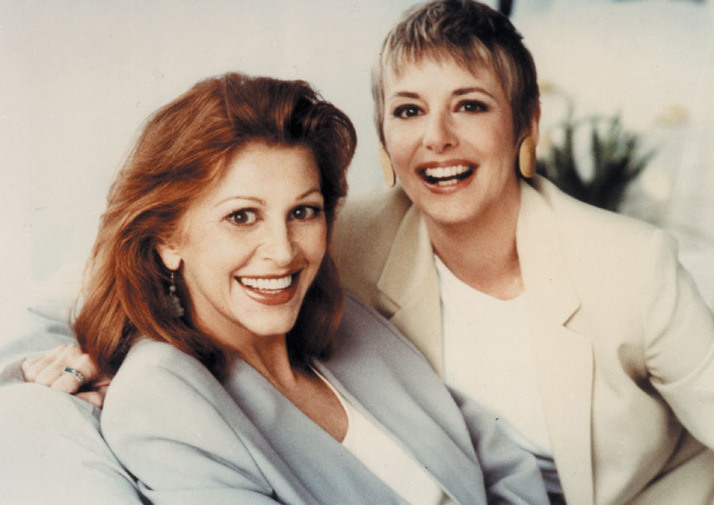
Co-authors Sheila and Cappy, 1995 (Cappy on the right)
Authors Sheila Warnock and the late Cappy Capossela were best friends long before they developed Share The Care™. For years, they worked together in advertising as a creative team developing print and television campaigns for both men and women’s fragrances. In January 2002, eight years after STC was first published, something unthinkable happened. Both Cappy and her Dad were diagnosed with malignant brain tumors. While her mother and brother organized the care of her father in their hometown, Sheila rushed to put together a STC meeting with 33 of Cappy’s friends in New York City – later dubbed “Cappy’s Brain Trust.”
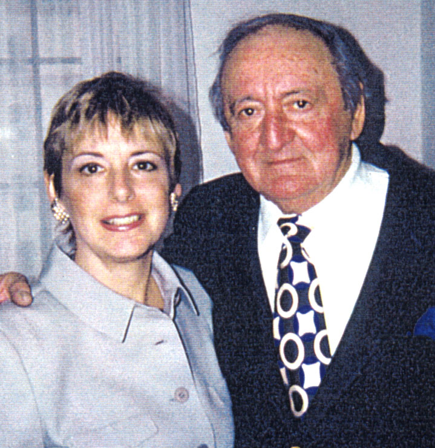
Cappy & her dad
Things got increasingly stressful following Cappy’s surgery to have her tumor de-bulked. In the weeks that followed she was rendered totally helpless and lost her abilities to speak, write, walk, and even move without the help of her group, and wonderful live-in nurses’ aide.
Out of desperation, the Brain Trust created a special approach to handling the most critical jobs. Besides our regular assignments, each person took on a “Specialist Captain” role that was never shared. (For example: a trusted friend became the “Financial Captain” whose special responsibility was to manage Cappy’s funds and pay her bills. Working this way assured that nothing important in Cappy’s life would fall through the cracks as her illness continued to advance at a frightening pace Ten months later and within 12 hours of each other, the Capossela family and the Brain Trust lost both Cappy and her Dad.
Sheila recalls telling Cappy that she was going to take STC and get it out there in a big way. After being a primary caregiver three times (and a free-floater for another friend with ALS.) it was pretty clear that STC was to be Sheila’s life’s mission.
In 2003, she started the paperwork and by the next summer we had our 501c3 for ShareTheCaregiving and the rest is history.
We think Cappy would be very pleased.
In Rememberance
CAPPY CAPOSSELA
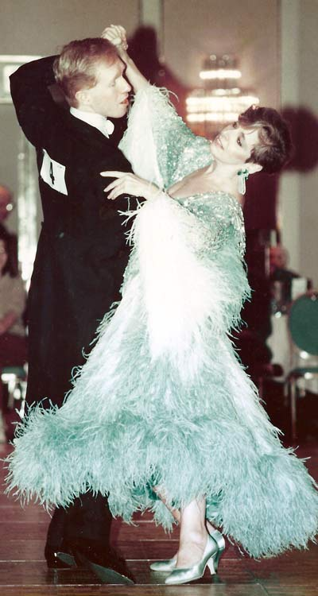
Cappy
Cappy was a graduate of Harpur College in New York State and had a long and very successful career at several top New York City Advertising Agencies as a Copywriter and Creative Director.
She was an avid ballroom dance competitor, a talented sumei painter and a jingle writer. She loved to garden on her apartment terrace and at her summerhouse in Fair Harbor, Fire Island. Her real passion, however, was creating Broadway musicals. She was in the midst of finishing her second musical, The Courtesan, when she died.
Today, Cappy lives in the heart of her family and friends. We will never forget her humor, incredible talents, endless enthusiasm and bright energy. She continues to be remembered by caregivers everywhere for putting all her talents to work co-authoring Share The Care™.
SUKIE MILLER, Ph.D. – A TRIBUTE
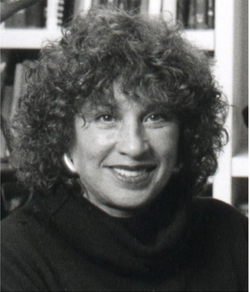
March 15, 1988 will forever be etched into my memory. It was that cold, windy night when the seed, later to bloom into a comprehensive caregiving model, was planted at an emergency meeting for a friend in the office of Dr. Sukie Miller.
Dr. Miller had strongly urged her patient, Susan Farrow, to reach out past her emotional comfort zone and ask her friends for help. Susan was a divorced, working mom with two teens and a painful bone cancer. To make matters worse she had no family nearby. However, by bringing what was a diverse bunch of friends together for some honest dialogue, we were able to plunge into action the very next morning.
We owe a huge debt to the insight, wisdom, and brilliance of Dr. Miller who truly understood the power of “group.” The 12 of us who attended that meeting went on to prove her right by supporting our friend in every way imaginable until she died nearly four years later. And we managed it without any one getting stuck doing too much. And best of all, we were bonded forever by this challenging yet significant life experience that resulted in us becoming widely known as “Susan’s Funny Family.”
Later, Dr. Miller was the chief cheerleader when Cappy Capossela and I decided to document our systems into a handbook that others could follow to create a “caregiving family” of their own. Dr. Miller offered her guidance and gifted us with the eloquent FORWARD to Share The Care™, first published in 1995.
Then, out of the blue, in early 2002 Cappy was stricken with a brain tumor and needed her own Share The Care™ group. Following Cappy’s death later that year, Dr. Miller again provided her enormous enthusiasm and encouragement for my decision to make Share The Care™ more widely known by founding our organization. And, as a member of our Board of Advisors for the last 10 years, she was always generous with her suggestions.
Dr. Sukie Miller was a profound influence in my life. I think it was her fearless and optimistic outlook that will be most treasured by me and surely by so many others in different parts of the world whose lives she touched. We will all miss this vivacious, and extraordinary woman with so many far-reaching legacies.
We lost Dr. Miller in December 2013.
SUKIE MILLER, Ph.D. was an early director of Esalen Institute, was a member of the Board of the Jung Institute of San Francisco and the Board of Medical Quality Assurance, the licensing board for the State of California. She had been a frequent consultant to Cancer and Social Action programs in Brazil.
In 1972 she founded and directed the pioneering Institute for the Study of Humanistic Medicine. One of the first researchers to study the cross cultural dimensions and implications of beliefs of the Afterdeath, her books Finding Hope When a Child Dies and After Death and How People Around the World Map the Journey After Life are published by Simon and Schuster.
Dr. Miller lived for years in Sao Paulo, Brazil where she continued to see clients with chronic and terminal diseases and worked extensively with groups.
Our Supporters
At EmblemHealth, we know that nothing is more important than access to quality doctors and health care facilities. Doctors who have specialized expertise. Doctors affiliated with great hospitals. Doctors who speak your language. That is why we work hard to attract and keep the best doctors and hospitals in each network. You can select a network that includes our physician group practices. They offer on-site labs and radiology, primary care physicians and specialists who work together, and a full range of commonly used health services, providing coordinated care at one convenient location.
We also know that quality health coverage means helping to keep you healthy, not just providing coverage when you are sick. That is why all of our EmblemHealth plans cover preventive care and offer a broad range of resources for living a healthy life or coping with a chronic medical condition.
With online tools and resources to help you better understand and manage your health, to incentives for healthier living, we work hard to keep you healthy.
We thank EmblemHeatlh for their support.
Ventura Associates International LLC is a full service sales promotion agency with a particular expertise in prize promotions. They manage the creation and administration of online and traditional sweepstakes, games and contests. In addition, they provide creative, fulfillment, website design and hosting, database management, tie-ins, co-ops, interactive, research, multicultural, social media and direct marketing services.
Click to learn more about Ventura. We thank Ventura Associates for their support to build our new STC Home Website.
First Presbyterian Church of Forest Hills, NY - www.presbyfh.org
A diverse family of Christian faith and fellowship, loving and serving our neighbors.
Today’s Caregiver, the first national magazine for all family and professional caregivers, and caregiver.com announce the 2015 Caregiver Friendly® Award recipients. The Caregiver Friendly® Awards are designed to celebrate products, services, books and media created with the needs of caregivers in mind.
The Maggie Kuhn awards are presented yearly by Presbyterian Senior Services. Last Thursday at the Harvard Club in New York City, the Rev. Greg Johnson from EmblemHealth gave Sheila a beautiful and touching introduction.
The Maggie Kuhn Awards – April 23, 2015
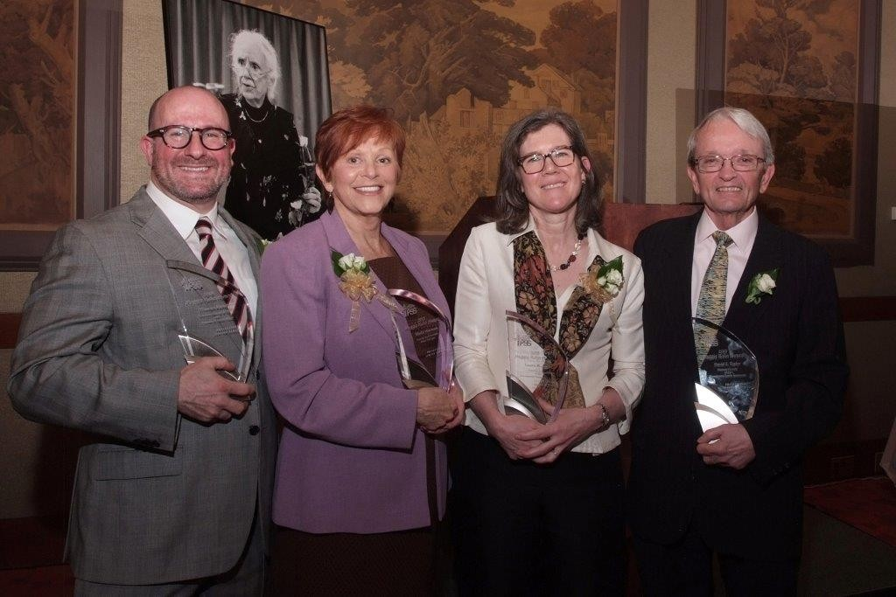
The Maggie Kuhn awards are presented yearly by Presbyterian Senior Services. Last Thursday at the Harvard Club in New York City, the Rev. Greg Johnson from EmblemHealth gave Sheila a beautiful and touching introduction.
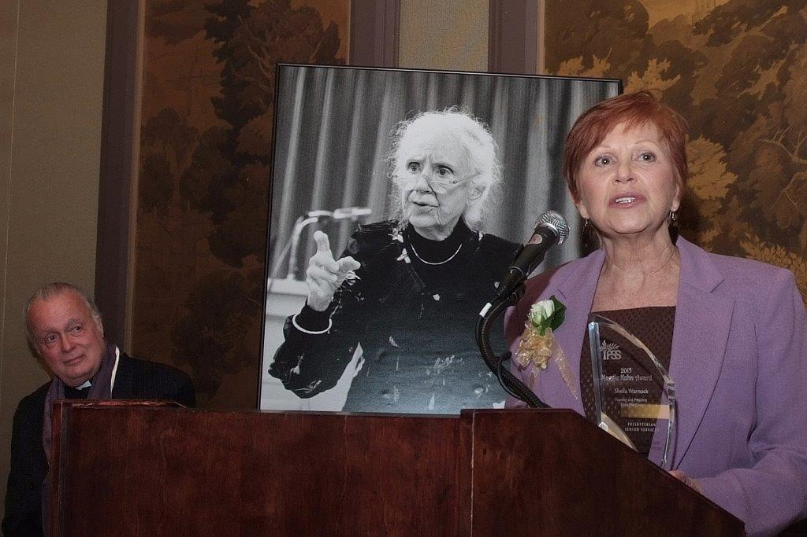
In her speech Sheila expressed her thanks to Maggie Kuhn for changing the world for people over 65 by standing up, and speaking out and to PSS for how humbled she was to be among their list of illustrious past award winners. She acknowledged the many contributions of the members of her organization, their funders and supporters. She also described her early years after founding the organization and the warm encouragement she received from the members of the NYC Family Caregiver Coalition. Greg Johnson received her special thanks for being a true champion of Share The Care™ from the minute she met him years ago.
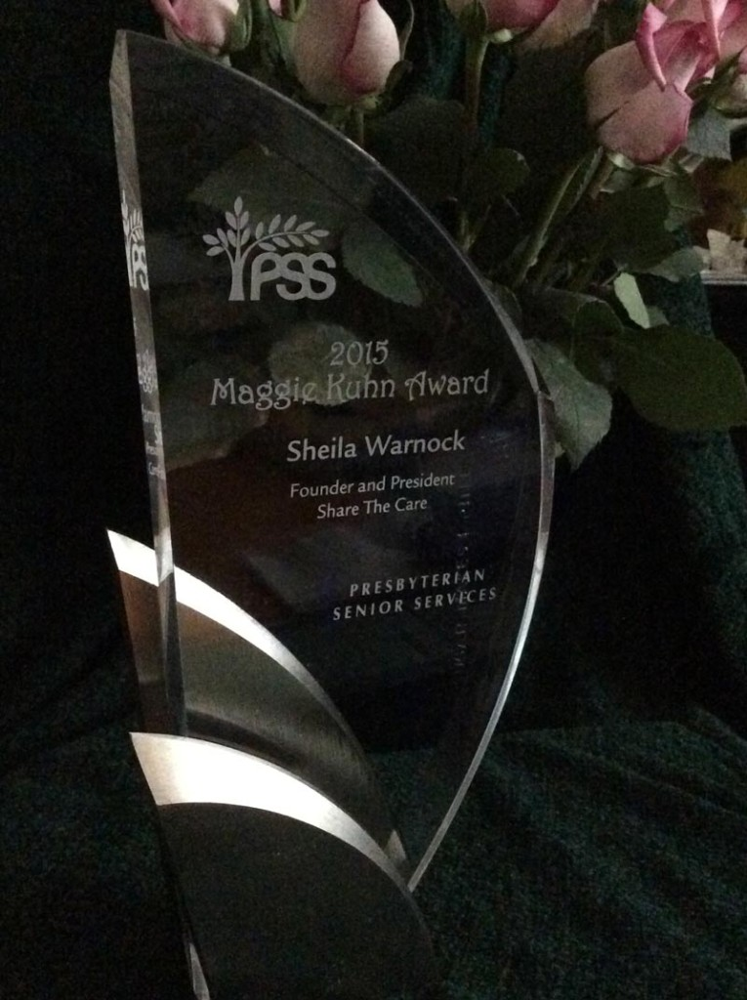
The 2015 Recipients were:
Thomas Kamber
Executive Director of OATS and Founder of Senior Planet
Sheila Warnock
Founder and President, ShareTheCaregiving aka Share The Care™
Laura Jervis and David Taylor
Visionary Founders of the PSS/WSF Grandparent Family Apartments
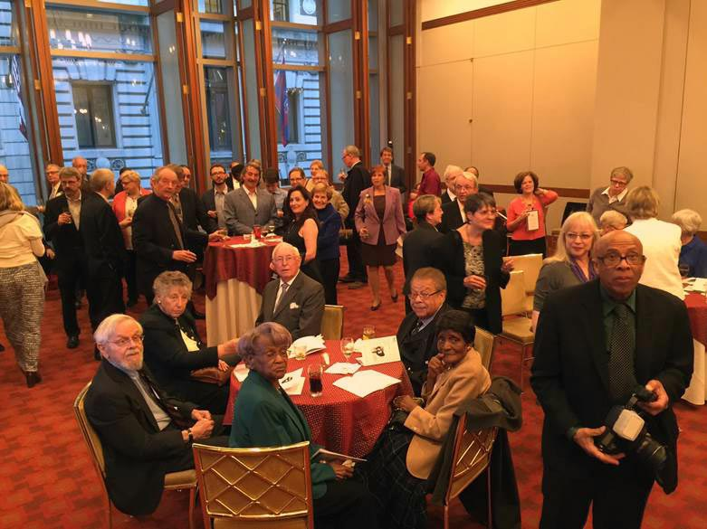
Some of those who attended
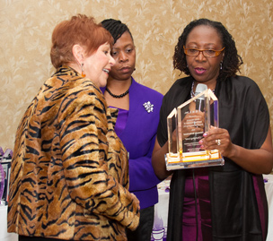
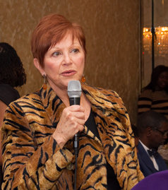
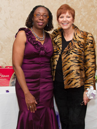
Sheila had been nominated by Greg Johnson at EmblemHealth to receive an award from the Caregivers Outreach Ministry Empowerment, Inc.
2013 – Daily Point of Light Award (#4030) given to Sheila Warnock for her work in creating meaningful change in communities across America. President Barack Obama and Points of Light Founder President George H. W. Bush joined dozens of service leaders from throughout the country at a White House event on July 15 to present the 5,000th Daily Point of Light Award
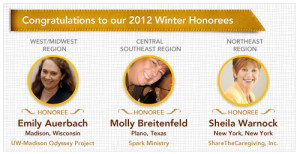
2012 Lady Godiva was proud to introduce our Winter Local Lady GODIVA Honorees: Emily Auerbach, Molly Breitenfeld and Sheila Warnock. These incredible women are the final Honorees for 2012 and we want to thank you for all of your support during the first year of the Program. Through your votes and nominations, GODIVA is able to bring more awareness to these valuable causes and award Emily, Molly and Sheila with a $1,000 grant to further their good works. http://the.ladygodivaprogram.com/Winter-Honorees
Sheila is one of the winners of the Marigold Ideas for Good Contest sponsored by Encore.org and Road Scholar. That means ShareTheCaregiving will receive $5,000 towards a much needed rebuild of our home web site. To view all the winners in different categories Click here.
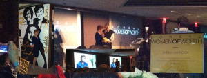
2011 Founder and President, Sheila Warnock, has been selected as a 2011 L’Oreal™ Paris Woman Of Worth. Sheila will received $10,000 for ShareTheCaregiving at an awards ceremony in December. She and nine other finalists will be featured on the L’Oreal™ Paris Women Of Worth web site.
We have been awarded up to $10,000 in pro bono coaching and capacity-building services from SEED (Stretch, Enliven, Ennoble, Discover). Beginning in November 2009, our core staff will participate in the SEED Diagnostic www.seedimpact.org to assess impact and performance. Following a half-day creative stretch workshop to define strategic growth intentions, monthly coaching sessions will be customized to keep us aligned with our vision and track outcomes.
In November, 2009, ShareTheCaregiving’s 2008-2009 Share The Care™ Program in New York City received an achievement award for Cross-generational Caregiving from The New York State Coalition for the Aging and the Statewide Caregiving & Respite Coalition of New York.
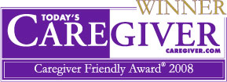
Share The Care™ has been awarded a 2008 Caregiver Friendlyaward in the Book category by Today’s Caregiver Magazine The Caregiver Friendly Awards are presented by Today’s Caregivermagazine to celebrate outstanding books, media, products and services which have been designed with the best interest of the caregiver and his or her loved one in mind. Click to read more.
Share The Care™ has been named one of the “BEST CONSUMER HEALTH BOOKS OF 2004” in the May ’05 issue of the Library Journal. (The only book listed in the caregiving catagory.) Click to read the pdf from the Library Journal.
Award Interviews & Videos
Lady Godiva Program
Celebrating Inspirational Women Around the World’s video of:
Sheila Warnock, STC Groups & STC
This video is from Godiva about STC & Sheila
The following video was produced by L’Oreal Paris for the 2011 Women of Worth Event.